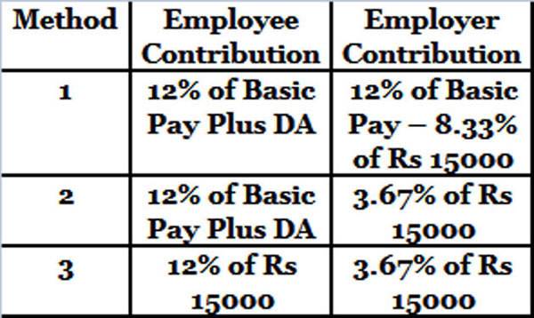

How to Check PF balance?
Step 1. Go to the government EPF portal
Step 2. Select the location (state, regional branch office) of your PF office
Step 3.Complete the online form complete with your personal info and the EPFO account number specified in your payslip
Step 4. Submit the form after verifying the details provided
Step 5. If all your records are in place, you will be sent the EPF balance as SMS to your registered mobile
Rate of Interest in EPF
The money accumulated in the government EPF trust offers compounded interest. At present, the interest rate is 8.65%. EPF is under the purview of a Central Board of Trustees and the government, who decide the interest rate. They review the interest rate annually.Opening balance for 2018 – 2017 balance + monthly contributions in 2018+ interest
Benefits of EPF
1. You can nominate a family member as your nominee, so that they can avail the pension or the corpus in the event of your demise
2. You get a fixed income once you retire, without having to work
3. EPF allows you to invest more than the basic 12% of your salary every month under the provision of Volunteer provident fund
4. You also get life insurance cover under EPF
5. EPF is not mandatory, though it is strongly recommended that you join
6. When you withdraw EPF (after 60), you can avail both EPS and EPF
7. You can withdraw early in case of an emergency under certain defined circumstances like job loss, wedding, loan repayment etc
8. TThere is no need to withdraw or open a new EPF as you can link the old one and the new one
How to transfer EPF money online?
Step 1. In the event of a job change, EPF can be transferred using the Unified Account Number (UAN) and the account number will stay the same
Step 2. Go to the official EPF member portal and register
Step 3. Login once you get the login credentials
Step 4. Visit the Online Transfer Claim Portal and request for EPF transfer using the same login details as above
Step 5. If you are eligible to make the transfer claim online, you can do it without having to submit Form 13
Step 6. Click ‘Request for Transfer of Funds’ and enter your old employment details as directed
Step 7. Get it authenticated by your previous or new employer
Step 8. After entering the details, you will receive a PIN on your mobile
Step 9. Use the tracking ID generated for you to track your application
Note: You cannot withdraw all your EPF. You will receive your PF amount after the deductions mentioned under Table D in the EPF rules.
EPF Calculator
EPF Calculator
Our EPF Calculator is one step solution to all your EPF related calculation questions. It easily calculates the return on your EPF contribution within no time. EPF Calculator is an online tool and hence can be used anywhere anytime.
How to use EPF Calculator
Details which you need to provide are as below:
- Current Age
- Retirement Age
- Current EPF Balance
- Employee Contribution
- Employer Contribution
- Growth Rate in EPF Contribution
- Rate of Interest
- Current Pension Fund Balance
Now let’s look at each input point in detail:
Current EPF Balance
Your monthly contributions towards your EPF account creates a balance for yourself. You can either check your EPF account balance online, via SMS or Missed Call or via Mobile App. We will discus their process in detail at the end.
Employee Contribution
This your contribution towards your retirement corpus of EPF. The employee contribution of 12% goes straight into the EPF.
Employer Contribution
But the employer’s contribution is allocated across the EPF and the EPS. The employer also bears 3 additional costs i.e. the EDLIS, the EPF admin charges and the EDLIS admin charges.
Employer Contribution is divided as:

- 3.67% into EPF
- 8.33% into EPS
- 0.5% into EDLIS
- 0.85% for EPF Administrative Charges
- 0.01% for EDLIS Administrative Charges
Growth Rate in EPF
This is also equal to your salary growth rate. In other words, enter the percent at which you expect your salary to grow. This in turn will lead to growth in your EPF contribution.
Rate of Interest
You can either put the current EPF rate of interest or the rate at which you assume your EPF would deliver returns.
Current Pension Fund Balance
Your pension fund balance is mentioned in your EPF Passbook which is part of Employees’ Pension Scheme (EPS).
Segregation of Your EPF Contribution
Currently, the following three schemes are in operation under the EPF Act of 1952, and it is into these trusts that your monthly contributions go:
- Employees’ Provident Fund Scheme (EPF) (1952)
- Employees’ Deposit Linked Insurance Scheme (EDLI) (1976)
- Employees’ Pension Scheme (EPS) (1995)
EPF, EPS and EDLIS are calculated on the basis of your Basic + Dearness Allowance (DA) (including cash value of any food concession allowed to the employee) + Retaining Allowance (RA) if any. (Retaining Allowance means allowance payable for the time being to an employee of any factory or other establishment during any period in which the establishment is not working, for retaining his services.)
What is Employee Provident Fund (EPF)?
An employee provident fund is created, through contributions, to provide financial support to individuals above a certain age, such as post retirement age or the incapacitation of the employee to continue working either temporarily or permanently. Contributions are made on a monthly basis, by both employees and employers, thereby encouraging employees to save a portion of their salary each month. Investments made by a vast number of employees across India are pooled together and invested by a trust.
The EPF is a tax-free investment instrument for the salaried class having an Exempt-Exempt-Exempt status The contributions made by the employee eligible for tax deductions under Section 80 C, the interest earned on the total investments and the withdrawal (including partial withdrawals for specific expenses) are exempt from the purview of taxation.
Here, you contribute 12% of the specified salary (either Rs. 6,500 or your actual Basic if it is higher - whichever you choose) and your employer contributes 3.67% of the specified salary (either Rs. 6,500 or the actual Basic, whichever is higher, if it so chooses).
What is Employee Pension Scheme (EPS)?
In this fund the employer and the Central Government contribute a defined amount every month with the sole objective of providing regular pension to the employee post retirement. You as an employee do not contribute to your own Pension Scheme, this is contributed by your employer and by the Central Government. Your employer contributes 8.33% of Rs. 6,500 Basic salary to the Employee Pension Scheme, and the Central Government contributes 1.16% of the same. The EPS provides you with regular annuity after your retirement.
Check your EPF balance Online
Yes, it can. Here are a few steps to be followed to check EPF balance using UAN number:
- Step 1:Open the web page https://passbook.epfindia.gov.in/MemberPassBook/Login.jsp
- Step 2: Enter your Universal Account Number of UAN.
- Step 3: Enter your password set for the UAN portal & fill in the captcha code
- Step 4: Once logged in, select your EPF account number from the list.
- Step 5: The passbook with updated balances will be loaded on the page.
Check EPF balance via SMS or Missed Call
Employees can now check their EPF balance through SMS or by giving a missed call. One such way which comes in handy at times when you do not have an active online connection is via SMS or missed calls. For this you will need to have an activated UAN number. In case you have a valid UAN, your mobile number too will be registered with the EPF department. Giving a simple missed call to 011-22901406 will ensure that you receive a SMS that lists down your PF number, age and name as per the EPF records. However, you will require your UAN along with Aadhaar Number or PAN Number in order to know your EPF balance.
KYC details along with UAN are mandatory for knowing your EPF balance. Once your UAN is integrated with your KYC, every time you give a missed call to the Employee’s Provident Fund department, you will receive SMS with your EPF details including the EPF balance.
Check EPF balance via mobile app
EPFO recently launched a mobile app for PF balance tracking riding on the mobile application trend in the Indian market. The mobile app helps to check the EPF balance and generate an account statement. The mobile app currently in the market is only available for the android version. EPFO will soon be launching mobile app versions for both blackberry and iOS devices.
Steps for using the EPF mobile app:
- Step 1: Open the mobile app – Umang (https://web.umang.gov.in/web/) - on your phone and click EPFO
- Step 2: Under the Employee Services option, click passbook and then input your 12-digit UAN number. The system will send an OTP to the mobile number registered with the EPFO
- Step 3: Once verified, you will be shown a screen which displays your updated EPF balance information along with personal details like your name, date of birth, Aadhaar number; PAN for tax deduction, last month EPF contribution etc.
The Mobile App is a good and handy way to check your EPF balance and that too on the go.
What is the Universal Account Number (UAN)?
UAN stands for Universal Account Number, which is a unique 12-digit number for all individuals enrolled under the EPF scheme. The best part is, UAN is a unique number assigned to each employee and remains permanent even when you switch your employment. UAN can be generated by logging in to the EPF website.
Once you have registered your UAN, you will receive details like EPF balance and other such information on your mobile phone via SMS.
The members who do not have smart phone can activate their UAN account by sending an SMS to 07738299899 from the comfort of their mobile phones which would enable them to avail all UAN related facilities.
The format of the SMS is EPFOHO
This facility is available in ten different languages namely English, Hindi, Punjabi, Gujarati, Marathi, Kannada, Telugu, Tamil, Malayalam and Bengali. A missed call service has been launched for those members who have activated their UAN. Such members can give a missed call to 011-22901406 to fetch the details about their accounts.
The government has taken necessary steps to offer UAN upfront to employees thus paving the way to experience the next generation of e-enabled services of EPFO.
How to Transfer Your EPF Money Online
The UAN number makes it simple to track your funds even while you move from one organisation to another at any point of time. You, too, can follow these steps and complete the hassle-free transfer procedure:
- Step 1: Check Your Eligibility
You can check your eligibility at the Online Transfer Claim Portal (OTCP) under the category “FOR EMPLOYEES” on the home-page of EPFO website – www.epfindia.gov.in
- Step 2: Fill in the Application Form
Once you’ve followed the above procedure, fill in the application form.
- Step 3: Submit the form
At this step, a Captcha code will appear; type that into the field and click on “GET PIN” button. But before you go ahead, don’t forget to signify your assent by selecting the button, “I Agree”.
Soon, you will receive the PIN on your registered mobile number. Submitting the PIN you’ve received will complete your online application transfer process.
- Step 4: Track your transfer status
A tracking ID will be generated once the application is over. With this, you can track your online application. And don’t forget to save the Printable Transfer Claim Form (Form 13) generated on your machine (desktop, laptop, tablet, phablet, smartphone or any other gadget you’re using), take a print-out, sign and send it across to the employer (current or previous) you’ve chosen to complete the claim process.
Online transfer claim has simplified the whole process and is hassle free. It takes 30-60 days to complete the claim settlement process and for the transfer to be done. Even your employer can view, verify or correct, and submit your details online through this portal.
Benefits of EPF
For a salaried person, contributions to the EPF offer a lot of benefits:
- Safe returns
This is one of the safest debt instruments available in the country. It is government backed and guarantees safety of principal and interest earned. It can help you accumulate a significant corpus for your retirement, as the contributions happen month on month for your entire working life. This makes it suitable for very long term financial goals.
- Friendly tax treatment
This is an E-E-E instrument – meaning your contributions are deductible under Section 80C, interest earned is tax free and maturity proceeds are also tax free, provided contributions to the fund have been for more than 5 years of service.
- Interest earned on EPF is the equivalent of a high pre-tax rate
Considering that the EPF is paying 8.75% this year, this is the equivalent of a 12.50% rate of interest (for somebody in the 30% tax bracket). This interest rate is guaranteed and risk-free.
Two common questions about EPF withdrawal
Can I withdraw my EPF money?
Yes, you can. Technically, the EPF is not withdrawable while you are still working, but there is some leeway here. There are certain circumstances when you can actually withdraw your money from EPF account before maturity. You can withdraw from your EPF account for the below needs:
- Construction / Purchase of a House including acquisition of site or plot for such purpose
- Addition / Repair to the existing house
- Repayment of loans
- Medical Treatment in case of certain major Illness
- Marriage or Education
- Withdrawal within one year before the retirement
Is it illegal to withdraw the PF in between jobs?
This is a little-known fact about the EPF that is often flouted. But yes, it is illegal to withdraw your PF between jobs.
To Conclude
Apart from the main features, it also allows withdrawals as detailed in an earlier question and you can also avail a loan against your EPF, using it as security.
However, keep in mind; this is a very long term instrument. If you have short term financial goals, don’t try to fund it by withdrawals from your EPF. If your goals are in fact primarily short term, as is the case with young couples, or parents funding their children’s educations in a few years, you might want to consider only investing the minimum amount in your EPF, and channelizing your remaining funds towards a more liquid instrument, keeping your risk appetite and goal time horizon in mind.